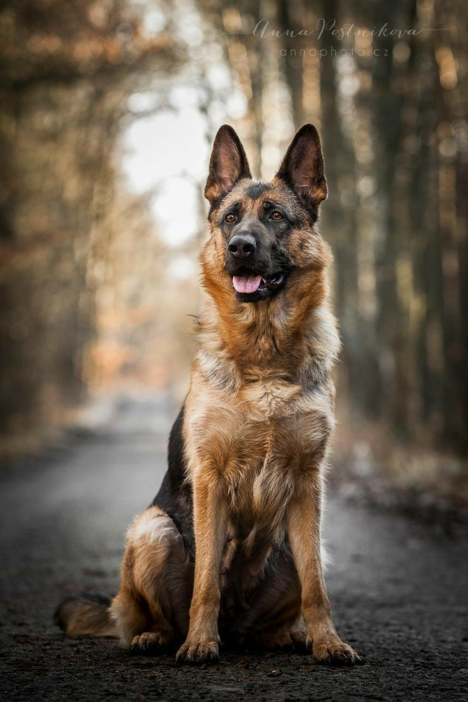

Популярные собаки
| =================Информация о сайте================= | |
| название | ссылки на материал |
|---|---|
| популярные собаки | https://spitz-sobaka.ru/poroda/istoriya-proishozhdeniya-porody |
Шпиц – одна из самых миниатюрных и распространённых собак в мире. В Свердловской области, по мнению уральских кинологов, более популярен померанский шпиц, которого в обиходе называют карликовым.
– Этот шпиц однозначно в лидерах, – говорит руководитель Свердловского кинологического центра Елена Киселёва. – Специалистам, которые занимаются составлением родословных собак, поступает очень много документов по этой породе.
Померанца довольно легко отличить от всех других шпицев за счёт его мягкой «ватной» шерсти, которая вместе с короткими толстыми лапками делает его похожим на маленького медвежонка. Чаще всего встречаются померанские шпицы с рыжей шерстью, и за последние годы таких мохнатых комочков, гуляющих со своими хозяйками, на улицах того же Екатеринбурга стало очень много. Считается, что эти маленькие собачки должны быть благодарны своему появлению и распространению женщинам, которые полюбили данную породу за её компактность и миловидность. Такие собаки есть у многих известных актрис и телеведущих, поэтому неудивительно, что у других женщин тоже появляется желание завести такую собаку.
Шпицы сочетают в себе всё, что нужно для жизни в современном городе и обществе: они красивые, умные и прекрасно дрессируются. При этом цена на них вполне приемлемая: можно найти шпица за 15–30 тысяч рублей. Единственный недостаток этой породы – шумность. Все кинологи отмечают, что шпицы действительно много лают, и если кто-то из соседей по лестничной клетке возвращается домой, то собака этой породы тут же оповещает об этом своего хозяина.

Ни для кого не секрет, что немецкие овчарки — самая распространенная порода собак для службы в полиции или армии. Представители этой породы не только быстро учатся, но и бесстрашны, быстро адаптируются и имеют врожденный инстинкт защиты близких и любимых. Немецкая овчарка — отличный охранник. С другой стороны, у них любящий и верный характер, поэтому они очень хорошо вливаются в семью. Немецкая овчарка превосходит других собак в любых видах спорта. В связи с предрасположенностью к обучению дрессировка на послушание проходит с ними как одно мгновение, но эти энергичные собаки могут быстро заскучать и им требуется около 40 минут в день на физическую нагрузку.
